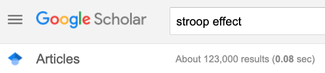

2020-10-06 14:46:16
Preliminaries
Agenda
- Aspirations, realities, & behavior change
- Databrary
- Toward a more perfect workflow
- Why R?
- How R
Aspirations, realities, & behavior change

“The first principle is that you must not fool yourself, and you are the easiest one to fool.” – Richard P. Feynmann

“…psychologists tend to treat other peoples’ theories like toothbrushes; no self-respecting individual wants to use anyone else’s.” Mischel, 2009
“The toothbrush culture undermines the building of a genuinely cumulative science, encouraging more parallel play and solo game playing, rather than building on each other’s directly relevant best work.” Mischel, 2009
Open science accelerates discovery
- Shows your work
- Data + analysis code + tasks
- What’s the effect size for…

Closed science slows discovery
- Wastes energy, time, money
- Hasn’t somebody tried X before?
- How big is the ‘file drawer effect’?
![[[@Rosenthal1979-zi]](https://doi.org/10.1037/0033-2909.86.3.638)](img/rosenthal-1979-file-drawer-problem.png)
Open science strengthens inference
- Improves reproducibility
- Reveals errors faster
- Permits verification, re-analysis; strengthens meta-analysis
- Boosts sample sizes & increases power
Closed science weakens inference
Yes, but…
- Sharing difficult, time-consuming
- Openness not yet rewarded, highly valued
- Collecting new data better (for me) than cleaning-up finished studies to share them
- I’ll share with X but not with Y
- I’ll change when..
- the field does/I graduate or get tenure or/I’m finished with my data…
- I can’t share because…
- I don’t have permission from IRB/participants/collaborators
- I own my data…
- don’t I?
Databrary.org
- World’s only data library specialized for storing and sharing video and audio + related data from research on humans
- Hosted at New York University
- Opened 2014
- 598 institutions; 1803 researchers; 61,236 hours of video + other data; 581 shared projects
Video and audio data pose special risks
- Faces & voices
- Names, personal locations
- Behaviors
Video data have unique research potential
as data…
- Spatially & temporally dense samples of behavior
- “Outputs” of biological processes
and as documentation…
- How procedures are actually done
- What computer-based tasks actually look or sound like
How Databrary protects personal data
- Shared only with participant permission (& IRB approval)
- Provide template language, scripts and procedure documentation
Share openly (but with restricted audiences)
- Researchers require institutional authorization
- Formal access agreement
- Site-wide access, not dataset-specific
- Generic uses
- Not limited to video & audio!
- Fosters data re-use and contribution
Access data via reproducible API commands
databraryapi::get_db_stats()
## date investigators affiliates ## 1 2020-10-06 14:46:16 1204 599 ## institutions datasets_total datasets_shared n_files ## 1 598 1145 581 129002 ## hours TB ## 1 61235.98 26.84145
Toward a more perfect workflow
Practices
- Reproducibility, transparency, and openness
- Exploit the web
- Use R Markdown documents as lab/project notebooks
- Give every new project
- A repo on GitHub
- A new project in RStudio
What’s reproducibility?
Methods reproducibility
- Enough details about materials & methods recorded (& reported)
- Same results with same materials & methods

Results reproducibility
- Same results from independent study
Inferential reproducibility
- Same inferences from one or more studies or reanalyses
What’s a reproducible workflow?
- Data in interoperable formats (.txt or .csv)
- Scripted, automated == minimize human-dependent steps
- Well-documented
- Kind to your future (forgetful) self
- Transparent to me & colleagues == transparent to others
Why R?
Aspirations & Philosophy
- You can learn to program
- You should learn to program
- R is a good language for learning programming
- Especially if you work with data
- R makes it easy to produce open, transparent, & reproducible workflows
The Story of R
- What is R?
- Programming language written by and for statisticians and data scientists
- Why is it called R?
- TLDR: it’s the free, open-source version of a commercial program called S developed in the 1970s at Bell Labs
- Bell Labs is also the home of C, and the Unix operating system
- Core language + 1,000s of packages
The storRy of R

The Story of R
- Features of R
- Written in C, Fortran, and R
- 9th most popular programming language
- Base R (now 4.0.2) + thousands of packages
- Object-oriented
my_plot <- hist(rnorm(n=100, mean=0, sd=1))
## $breaks ## [1] -3.0 -2.5 -2.0 -1.5 -1.0 -0.5 0.0 0.5 1.0 1.5 ## [11] 2.0 2.5 3.0 3.5 ## ## $counts ## [1] 4 18 53 103 138 203 167 152 106 35 17 2 2 ## ## $density ## [1] 0.008 0.036 0.106 0.206 0.276 0.406 0.334 0.304 0.212 ## [10] 0.070 0.034 0.004 0.004 ## ## $mids ## [1] -2.75 -2.25 -1.75 -1.25 -0.75 -0.25 0.25 0.75 1.25 ## [10] 1.75 2.25 2.75 3.25 ## ## $xname ## [1] "rnorm(n = 1000, mean = 0, sd = 1)" ## ## $equidist ## [1] TRUE ## ## attr(,"class") ## [1] "histogram"
What is RStudio
- Integrated Development Environment (IDE) for using R.
- Editor
- Console
- Version control
- Help
- Free + paid versions
- Install on local computer or use PSU’s cloud
How R?
Psychology Department Resources
DataCamp

Let’s open (& strengthen) psychological science
Share our own data and materials
- Databrary
- Data that should be restricted
- Start with procedure videos, displays
- Open Science Framework (OSF)
- OpenNeuro
Write and share reproducible analysis & display code
- Psychophysics Toolbox, Psychopy, E-Prime
- Github, Gitlab
- MATLAB, R, Python, shell scripts; but also SPSS, SAS, …
Change the scientific culture…
- Reuse shared data
- Cite colleagues’ data & materials
- Add open science contributions to our websites, CVs, etc.
- Urge professional societies and journals to adopt open science policies, e.g. (SRCD, 2019)
Use video
- to document and share procedures
- to capture and describe a broader range of participants’ behaviors
You R ready to do it!
rog1@psu.edu gilmore-lab.github.io github.com/gilmore-lab
Resources
Software
This talk was produced on 2020-10-06 in RStudio using R Markdown. The code and materials used to generate the slides may be found at https://github.com/gilmore-lab/2020-10-07-why-r. Information about the R Session that produced the code is as follows:
## R version 3.6.2 (2019-12-12) ## Platform: x86_64-apple-darwin15.6.0 (64-bit) ## Running under: macOS Catalina 10.15.7 ## ## Matrix products: default ## BLAS: /System/Library/Frameworks/Accelerate.framework/Versions/A/Frameworks/vecLib.framework/Versions/A/libBLAS.dylib ## LAPACK: /Library/Frameworks/R.framework/Versions/3.6/Resources/lib/libRlapack.dylib ## ## locale: ## [1] en_US.UTF-8/en_US.UTF-8/en_US.UTF-8/C/en_US.UTF-8/en_US.UTF-8 ## ## attached base packages: ## [1] stats graphics grDevices utils datasets ## [6] methods base ## ## other attached packages: ## [1] qrcode_0.1.1 ## ## loaded via a namespace (and not attached): ## [1] png_0.1-7 packrat_0.5.0 ## [3] digest_0.6.25 mime_0.9 ## [5] R.methodsS3_1.8.1 R6_2.4.1 ## [7] jsonlite_1.7.1 magrittr_1.5 ## [9] evaluate_0.14 highr_0.8 ## [11] httr_1.4.2 rlang_0.4.7 ## [13] stringi_1.5.3 curl_4.3 ## [15] R.oo_1.24.0 R.utils_2.10.1 ## [17] databraryapi_0.2.3 rmarkdown_2.3 ## [19] tools_3.6.2 stringr_1.4.0 ## [21] xfun_0.17 yaml_2.2.1 ## [23] compiler_3.6.2 base64enc_0.1-3 ## [25] htmltools_0.5.0 knitr_1.29
## Logout Successful.
## [1] TRUE
References
Adolph, K.E., Gilmore, R.O., & Kennedy, J.L. (2017). Video as data and documentation will improve psychological science. https://www.apa.org/science/about/psa/2017/10/video-data. Retrieved from https://www.apa.org/science/about/psa/2017/10/video-data
Allaire, J., Xie, Y., McPherson, J., Luraschi, J., Ushey, K., Atkins, A., … Iannone, R. (2020). Rmarkdown: Dynamic documents for r. Retrieved from https://github.com/rstudio/rmarkdown
Gilmore, R. (2020). Databraryapi: Control the Databrary API. Retrieved from http://github.com/PLAY-behaviorome/databraryapi
Gilmore, R. O., & Adolph, K. E. (2017). Video can make behavioural science more reproducible. Nature Human Behavior, 1. https://doi.org/10.1038/s41562-017-0128
Gilmore, R. O., Cole, P. M., Verma, S., Aken, M. A. G., & Worthman, C. M. (2020). Advancing scientific integrity, transparency, and openness in child development research: Challenges and possible solutions. Child Development Perspectives, 14(1), 9–14. https://doi.org/10.1111/cdep.12360
Mota-Mena, N., & Scherf, K. S. (2016). Pubertal development shapes perception of complex facial expressions. Databrary. https://doi.org/10.17910/B7.272
R Core Team. (2019). R: A language and environment for statistical computing. Vienna, Austria: R Foundation for Statistical Computing. Retrieved from https://www.R-project.org/
Rosenthal, R. (1979). The file drawer problem and tolerance for null results. Psychological Bulletin, 86(3), 638–641. https://doi.org/10.1037/0033-2909.86.3.638
SRCD. (2019). Policy on scientific integrity, transparency, and openness | society for Research in Child Development SRCD. https://www.srcd.org/policy-scientific-integrity-transparency-and-openness. Retrieved from https://www.srcd.org/policy-scientific-integrity-transparency-and-openness
Szucs, D., & Ioannidis, J. P. A. (2017). Empirical assessment of published effect sizes and power in the recent cognitive neuroscience and psychology literature. PLoS Biology, 15(3), e2000797. https://doi.org/10.1371/journal.pbio.2000797
Xie, Y., Allaire, J. J., & Grolemund, G. (2018). R markdown: The definitive guide. Boca Raton, Florida: Chapman; Hall/CRC. Retrieved from https://bookdown.org/yihui/rmarkdown